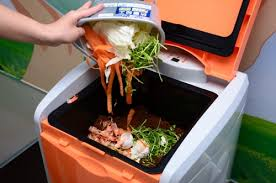
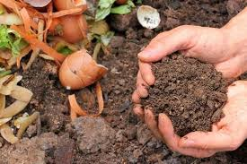
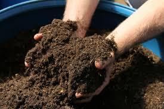
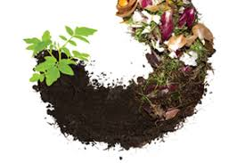

Using natural organic fertilizer is nothing new. Years ago, people gardened because their backyard produce was better,
cheaper and healthy than store bought. This is a universal truth and the trick behind this is the enrichment of the garden
soil with organic matter, compost, and homemade plant food natural fertilizers.
You can use organic material from leftover food and grass clippings to organic fertilizers made from plant or animal remains.




Make organic fertilizer from your kitchen waste
This is an effective and eco-friendly way of disposing food waste in your kitchen. Follow the below steps to make your own organic fertilizer from your kitchen waste
- 1. Collect your kitchen waste.
- Collect fruits and vegetables, egg shells nuts and easily decaying things. Do not mix oils, fatty meats and milk products into that collection. Keep these things on a well-drained and open area and sprinkle some wood ash to boost the composting process.
- 2. Speedup the composting process
- Add other oranic materials like wood ash, sawdust or manure.
- 3. Collect garden waste
- You can produce nutrient-rich fertilizer by adding some natural waste like grass clipping and leaves.
- 4. Create the compost
- Compost bin should have a handle and some holes which you can easily turn as rotate and mix to incorporate oxygen into the mixture. Recomment spinning the compost bin 2 o 3 times a day for best results. On average it takes about three months for a full decomposition, as long as the temperatures are hot and the compost pile stays moist.
- 5. Apply the fertilizer
- I you are not in the above conditions, it may takes about 6 months or a year. Wait for it to reach a soil like mixture that is dark in color. Then use a garden fork to spread the compost on the garden. Apply the right ammount of compost and wait before add more.